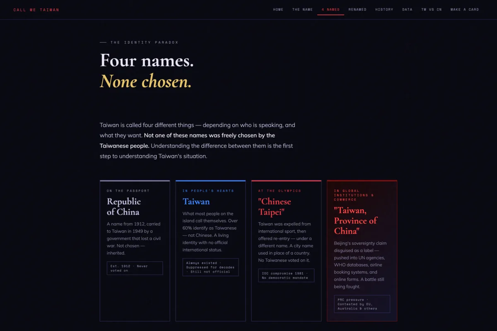

The Challenge
Making an invisible injustice visible.
讓看不見的不公義，變得可見。
Taiwan is internationally known as "Chinese Taipei" or "Taiwan, Province of China" in some UN agencies and forms — names pushed by Beijing, never chosen by the Taiwanese people. The challenge wasn't just to inform, but to make people feel the absurdity of the situation.
如何讓一個從未親身經歷的問題，讓人感同身受？這是這個網站最核心的設計挑戰。
"What if the United States competed internationally as 'British Washington D.C.'?"
設計的核心策略：讓觀眾想像，如果換成自己的國家被改名，他們能接受嗎？
The design strategy: reframe the issue through empathy. Instead of presenting dry facts, we designed interactions that put the audience in Taiwan's shoes.
Interactive Feature
Would you accept it?
如果換成你的國家，你能接受嗎？
The most distinctive feature: a Tinder-style interactive that shows users how other countries would feel if the same renaming logic were applied to them. Each card presents a country with its hypothetical "renamed" version — users can swipe or vote Acceptable / Ridiculous.
最具代表性的互動設計：以 Tinder 刷卡模式，讓使用者逐一判斷每個國家被改名是否合理，讓抽象的政治問題瞬間具體可感。
The "Would you accept it?" interactive — applying Taiwan's naming logic to other countries.
Data & Editorial Design
Numbers that tell a story.
用數據說一個讓人無法忽視的故事。
The site pairs editorial typography with carefully designed data visualisations — comparing Taiwan and China across press freedom, democracy index, GDP, and global recognition. Dark backgrounds and high-contrast type give the data emotional weight.
深色背景搭配高對比排版，讓台灣與中國的各項指標對比清晰可見，數字本身就在說話。

Homepage — editorial hero with data snapshot

Identity page — four names, none chosen by Taiwan
History Feature
A history worth knowing.
一段值得被認識的歷史。
The History section brings Taiwan's complex political timeline to life with scroll-based narrative design — each chapter unfolds as the user reads, guiding them through decades of international pressure and identity.
歷史章節以滾動敘事設計呈現，讓使用者跟著時間軸，一步步理解台灣長達數十年的正名處境。
History page — scroll-based narrative timeline
Have a project in mind?
有想法了嗎？
Whether it's a brand entering the UK market or a website that needs to say something that matters — let's talk.